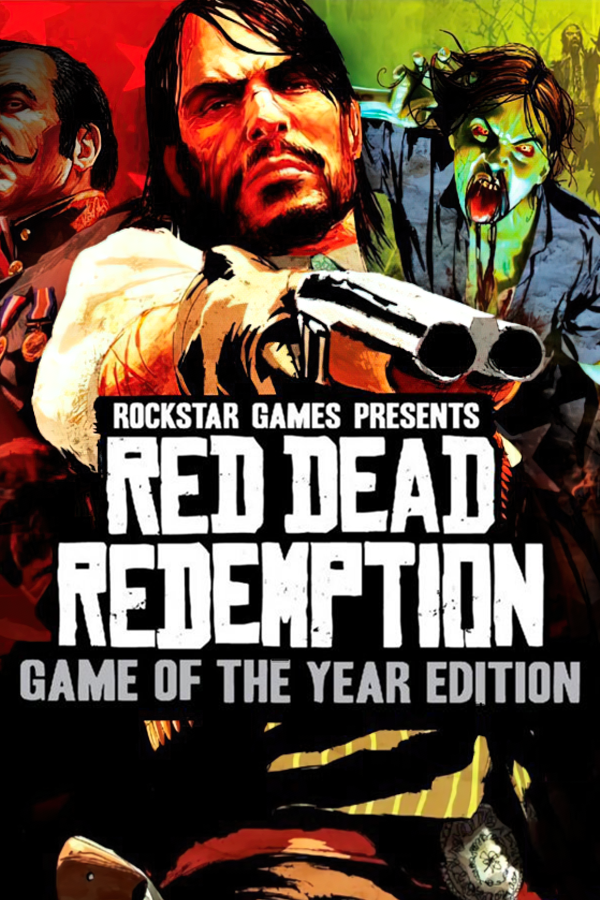

Red Dead Redemption: Game of the Year Edition
Red Dead Redemption: Game of the Year Edition
Detalhes
|  | |
| Tempo de jogo | Não Jogado |
| Última Atividade | Nunca |
| Adicionado | 18/04/2024 19:39:28 |
| Modificado | 10/03/2025 0:21:47 |
| Status de Conclusão | Not Played |
| Biblioteca | Playnite |
| Fonte | |
| Plataforma | Super Nintendo |
| Data de Lançamento | 2011 |
| Pontuação da Comunidade | 89 |
| Avaliação da crítica | 95 |
| Pontuação do Usuário | |
| Gênero | Action-adventure |
| Desenvolvedor | Rockstar San Diego |
| Editor | Rockstar Games |
| Funções | Multiplayer Single Player |
| Links | Wikipedia |
| Tag | [EMT] Video Micro missing [EMT] Video missing [HLTB] 20 a 30 horas |
Descrição
Red Dead Redemption is a 2010 action-adventure game developed by Rockstar San Diego and published by Rockstar Games. A successor to 2004's Red Dead Revolver, it is the second game in the Red Dead series. Red Dead Redemption is set during the decline of the American frontier in the year 1911. It follows John Marston, a former outlaw who, after his wife and son are taken hostage by the government in ransom for his services as a hired gun, sets out to bring three members of his former gang to justice. The narrative explores themes of the cycle of violence, masculinity, redemption, and the American Dream.
The game is played from a third-person perspective. The player can freely roam in its interactive open world, a fictionalized version of the Western United States and Northern Mexico, primarily by horseback, and on foot. Gunfights emphasize a gunslinger gameplay mechanic called "Dead Eye" that allows players to mark multiple shooting targets on enemies in slow motion. The game uses a morality system by which the player's actions affect their character's levels of honor, fame, and how other characters respond to the player. An online multiplayer mode is included with the original release, allowing up to 16 players to engage in both cooperative and competitive gameplay in a recreation of the single-player setting.
The game's development lasted over five years, and it became one of the most expensive video games ever made. Rockstar improved its proprietary game engine to increase its technological capabilities. The development team conducted extensive research, including field trips to Washington, D.C. and analyzing classic Western films, to achieve realism for the game. The team hired professional actors to perform the body movements through motion capture. Red Dead Redemption features an original score composed by Bill Elm and Woody Jackson. The game's development received controversy following accusations of unethical working practices. The studio's working hours and managerial style were met with public complaints from staff members.
Red Dead Redemption was released for the PlayStation 3 and Xbox 360 in May 2010, for the Nintendo Switch and PlayStation 4 in August 2023, and for Windows in October 2024. It received critical acclaim for its visuals, music, performances, gameplay, and narrative. It won year-end accolades, including Game of the Year awards from several gaming publications, and is considered one of seventh-generation console gaming's most significant titles and among the greatest video games ever made. It has shipped over 25 million copies. Several downloadable content additions were released; Undead Nightmare added a new single-player campaign in which Marston searches for a cure for an infectious zombie plague. A prequel, Red Dead Redemption 2, was released in October 2018.